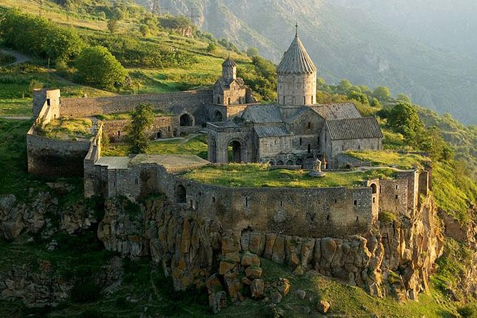
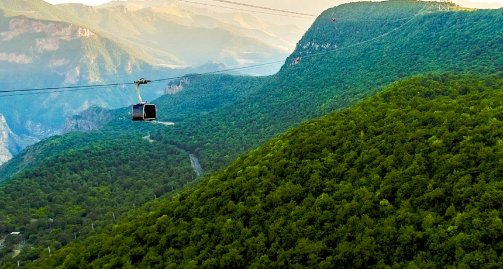
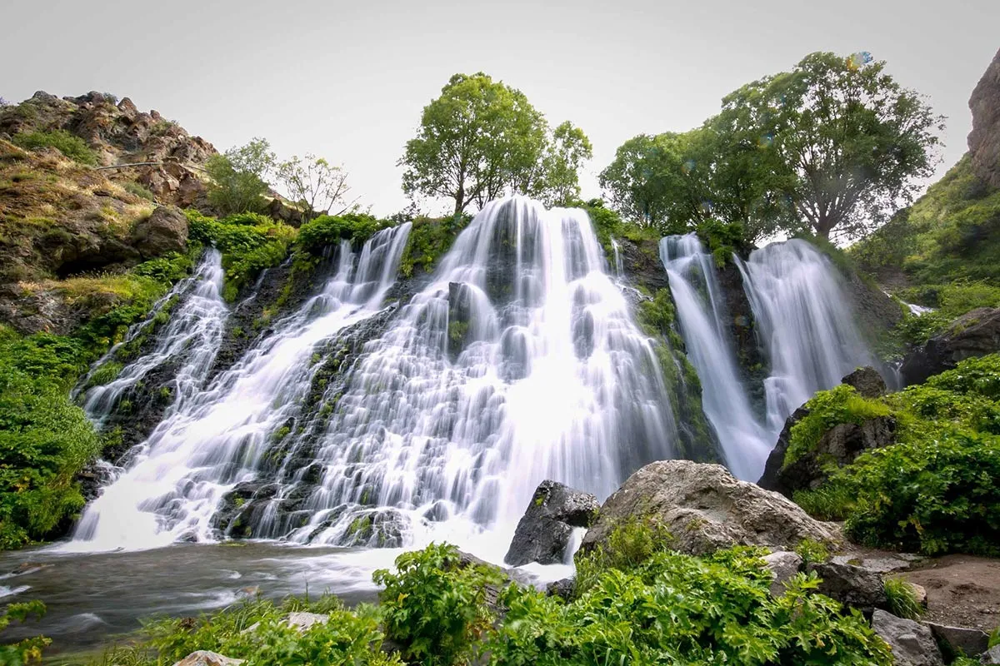

Famous Places

Khndzoresk Swinging Bridge
The Swinging bridge is located in the village of Khndzoresk in the Syunik region. The bridge, which connects the two “banks” of Khndzoresk – the Old and New, was put into operation in June 2012.The bridge has a length of 160 meters, a height of 63 meters, and weighs 14 tons. Approximately 700 people of average weight can simultaneously cross the bridge. From the bridge, there is a breathtaking view of the gorge. Not only can you see the four churches of Khndzoresk from the bridge, but also the famous “Nine Children” source are clearly visible.
Tatev Monastery
The Tatev Monastery (Armenian: Տաթևի վանք, romanized: Tat'evi vank') is a 9th-century Armenian Apostolic Christian monastery located on a large basalt plateau near the village of Tatev in the Syunik Province in southeastern Armenia. The term "Tatev" usually refers to the monastery. The monastic ensemble stands on the edge of a deep gorge of the Vorotan River. Tatev is known as the bishopric seat of Syunik and played a significant role in the history of the region as a center of economic, political, spiritual and cultural activity.


Wings of Tatev
Wings of Tatev is a 5.7 km cableway between Halidzor and the Tatev monastery in Armenia. It is the longest reversible aerial tramway built in only one section, and holds the record for Longest non-stop double track cable car. Construction was finished on 16 October 2010.
Shaki Waterfall
Shaki Waterfall is a waterfall in Armenia, with a height of 18 m. It is located in Syunik Province. The Shaki Waterfall is situated 6 km from the town of Sisian. On the left side of the river Vorotan's gorge, basalt lava flows have solidified to form a ledge 18 meters high from which the waterfall cascades down.
